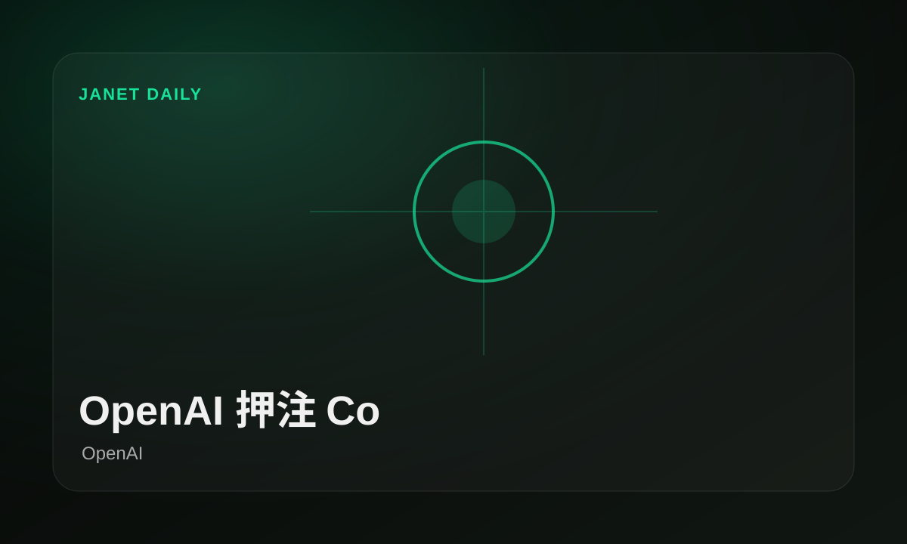
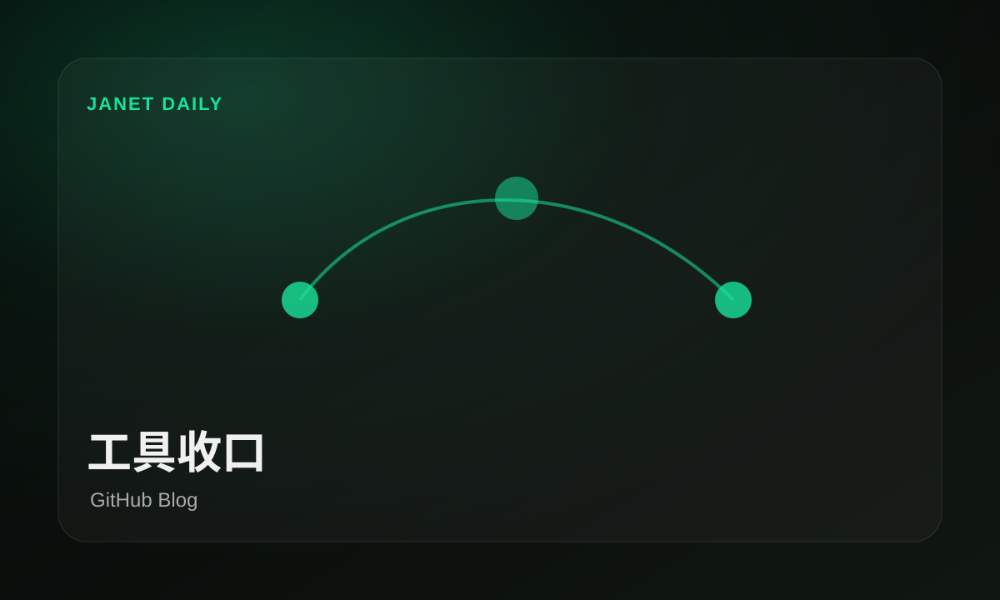
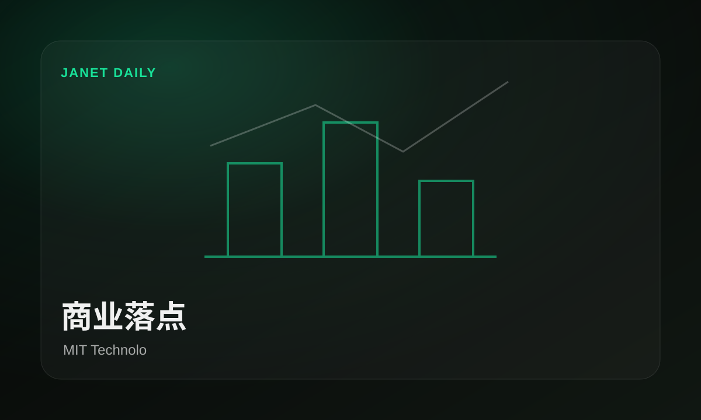

NVIDIA 把智能体继续推向开发者
原文：NVIDIA CEO Jensen Huang at Dell Technologies World: ‘Demand Is Going Parabolic, Utterly Parabolic’NVIDIA 正在把 AI 能力塞进开发者工作流，影响的是入口、工具选择和团队每天怎么交付。
重点不是多一个按钮，是开发者每天工作的入口又被模型咬住一块。
原文今天最值得看的不是热闹数量，而是OpenAI、NVIDIA AI、Hugging Face、GitHub Blog把Codex推到了台前：谁在抢入口，谁在补工具，谁还只是发声明，一眼分清。
今天窗口里，OpenAI、NVIDIA AI、Hugging Face、GitHub Blog把产品和研究摆在台面上：不是每条都惊天动地，但它们共同说明，模型能力正在往开发、开源和研究的日常环节里挤。

 模型上新
模型上新TechCrunch把马斯克与 OpenAI 的诉讼焦点放在“谁能被信任”上，这不是普通法务新闻，而是 AI 公司治理和商业承诺的压力测试。
马斯克与 OpenAI 诉讼，信任成核心问题 · TechCrunch AI
工具收口GitHub 正在把 AI 能力塞进开发者工作流，影响的是入口、工具选择和团队每天怎么交付。
GitHub 继续把 Copilot 往工作流里塞 · GitHub Blog
开源补位Hugging Face 正在把 AI 能力塞进开发者工作流，影响的是入口、工具选择和团队每天怎么交付。
Hugging Face 把智能体继续推向开发者 · Hugging FaceOpenAI 这条围绕 Codex 和软件开发展开，重点是智能体不再只做演示，而是被推向真实工程团队。
NVIDIA 正在把 AI 能力塞进开发者工作流，影响的是入口、工具选择和团队每天怎么交付。
NVIDIA 正在把 AI 能力塞进开发者工作流，影响的是入口、工具选择和团队每天怎么交付。
AWS 释放了开源侧信号，真正要看的是社区能否快速复现、封装，并把它变成可用工具。
Hugging Face 这条新闻指向AI 工具的具体落点，适合和同日新闻一起看它影响谁、改变什么入口。
AWS 这条更偏商业落地，重点看客户、价格和入口是否真的发生变化。
Hugging Face 这条新闻指向AI 工具的具体落点，适合和同日新闻一起看它影响谁、改变什么入口。
NVIDIA 正在把 AI 能力塞进开发者工作流，影响的是入口、工具选择和团队每天怎么交付。
重点不是多一个按钮，是开发者每天工作的入口又被模型咬住一块。
原文Hugging Face 正在把 AI 能力塞进开发者工作流，影响的是入口、工具选择和团队每天怎么交付。
重点不是多一个按钮，是开发者每天工作的入口又被模型咬住一块。
原文GitHub 正在把 AI 能力塞进开发者工作流，影响的是入口、工具选择和团队每天怎么交付。
重点不是多一个按钮，是开发者每天工作的入口又被模型咬住一块。
原文NVIDIA 正在把 AI 能力塞进开发者工作流，影响的是入口、工具选择和团队每天怎么交付。
重点不是多一个按钮，是开发者每天工作的入口又被模型咬住一块。
原文AWS 正在把 AI 能力塞进开发者工作流，影响的是入口、工具选择和团队每天怎么交付。
重点不是多一个按钮，是开发者每天工作的入口又被模型咬住一块。
原文AWS 正在把 AI 能力塞进开发者工作流，影响的是入口、工具选择和团队每天怎么交付。
重点不是多一个按钮，是开发者每天工作的入口又被模型咬住一块。
原文MIT Tech Review 正在把 AI 能力塞进开发者工作流，影响的是入口、工具选择和团队每天怎么交付。
重点不是多一个按钮，是开发者每天工作的入口又被模型咬住一块。
原文TechCrunch 这条更像服务运行记录，不适合作为头条，但可以帮助判断工具稳定性和平台状态。
这类更像值班记录，能进归档，但别让它抢头条。
原文AWS 释放了开源侧信号，真正要看的是社区能否快速复现、封装，并把它变成可用工具。
开源这边的信号很直接：别只看巨头发布会，能复用的东西才会长腿。
原文Hugging Face 这条新闻指向AI 工具的具体落点，适合和同日新闻一起看它影响谁、改变什么入口。
开源这边的信号很直接：别只看巨头发布会，能复用的东西才会长腿。
原文Hugging Face 这条新闻指向AI 工具的具体落点，适合和同日新闻一起看它影响谁、改变什么入口。
开源这边的信号很直接：别只看巨头发布会，能复用的东西才会长腿。
原文AWS 这条更偏商业落地，重点看客户、价格和入口是否真的发生变化。
商业新闻的看点是钱和入口流向谁，口号先放一边。
原文TechCrunch 这条新闻指向产品落点的具体落点，适合和同日新闻一起看它影响谁、改变什么入口。
TechCrunch这条不必喊口号，先看它会不会把产品落点变成可用入口。
原文The Verge 这条新闻指向产品落点的具体落点，适合和同日新闻一起看它影响谁、改变什么入口。
The Verge这条不必喊口号，先看它会不会把产品落点变成可用入口。
原文MIT Tech Review把汽车行业的 AI 竞争指向人才和能力储备，真正的分水岭可能不是谁会宣传，而是谁能把 AI 塞进研发、制造和服务链路。
车圈的 AI 竞赛不只在座舱屏幕上，也在招聘和组织结构里。
原文TechCrunch 这条新闻指向模型能力的具体落点，适合和同日新闻一起看它影响谁、改变什么入口。
TechCrunch这条不必喊口号，先看它会不会把模型能力变成可用入口。
原文TechCrunch把马斯克与 OpenAI 的诉讼焦点放在“谁能被信任”上，这不是普通法务新闻，而是 AI 公司治理和商业承诺的压力测试。
这场官司真正吵的不是情绪，是 AI 公司说过的话还能不能算数。
原文TechCrunch 这条新闻指向产品落点的具体落点，适合和同日新闻一起看它影响谁、改变什么入口。
TechCrunch这条不必喊口号，先看它会不会把产品落点变成可用入口。
原文MIT Tech Review 这条新闻指向产品落点的具体落点，适合和同日新闻一起看它影响谁、改变什么入口。
MIT Tech Review这条不必喊口号，先看它会不会把产品落点变成可用入口。
原文The Verge把马斯克与 OpenAI 的诉讼焦点放在“谁能被信任”上，这不是普通法务新闻，而是 AI 公司治理和商业承诺的压力测试。
这场官司真正吵的不是情绪，是 AI 公司说过的话还能不能算数。
原文The Verge 这条新闻指向产品落点的具体落点，适合和同日新闻一起看它影响谁、改变什么入口。
The Verge这条不必喊口号，先看它会不会把产品落点变成可用入口。
原文The Verge把马斯克与 OpenAI 的诉讼焦点放在“谁能被信任”上，这不是普通法务新闻，而是 AI 公司治理和商业承诺的压力测试。
这场官司真正吵的不是情绪，是 AI 公司说过的话还能不能算数。
原文